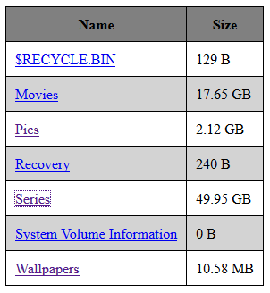

NavImage - Replicate directory's naviagtion hierarchy
Tool to create image of directory's navigation structure
Creating an image of HDD is useful, but sometimes you don't want to bother with copying your entire HDD
but rather only preserve it's navigation structure. This tool allows you to do exactly that.
It replicates the directory structure of a source directory in the same hierarchical manner as the source.
The only difference is that it does not copy files and their contents.
Instead it associates each directory with a index.html file containing information about it's files
and also linking to relevant directories.
TL;DR It replicates entire directory structure in folder only manner
and associates each folder with it's index.html file containing list of files originally contained in directory.
Info about usage and specifications on GitHub.

View this project on GitHub (Also download as .JAR)
SEncrypt - The Text Encryptor
Coded in C++, SEncrypt is a text
encryption
program. It can be used to encrypt and decrypt text into ciphers to prevent their misuse.
SEncrypt encrypts text by creating a ASCII character bijective map whose mapping is random
and seeded by a key entered by user. The text message is then encrypted or decrypted
using this map.
The only feasible way to crack the encryption is to recreate the mapping, which because
of it's very randomness can only be obtained by obtaining the key of encryption.
Example -
$ ./sencrypt.exe
Enter a key : mykey
Your msg : hello world
Encrypted Output : kBcc&nC&Qc1
Decrypted Output : ?1]]{gQ{B]N
$ ./sencrypt.exe
Enter a key : mykey
Your msg : kBcc&nC&Qc1
Encrypted Output : Wr77.Zt.w7e
Decrypted Output : hello world
The program can also be used to read/write encryptions/decryptions to a text file instead.
General syntax -
$ [e or d] [key] [inputfile] <[outputfile]>
Example -
$ ./sencrypt.exe e somekey input.txt out.txt
$ ./sencrypt.exe d somekey out.txt
1
This is some message that is written in input.txt
Download .zip
Rainfall Physics Simulator
This project attempts to simulate rainfall and physics of water-flow.
Purpose of this project was to learn dynamic GUI updating in JavaFX
using concept of FPS and to get hands-on experience on a simple physics simulator,
both of which have been duly accomplished. Side objectives included learning event-handling,
logic for creation of smoothed landscapes (like those created in games like Minecraft)
and JavaFX Animations. All checked.
This project, strictly speaking, is not a true physics simulator -
- There is no concept of velocity. Raindrops are coded such that they move,
if they can, exactly 1 pixel each frame.
- There is gravity but there is no concept of acceleration due to gravity.
This is implicitly stated in previous statement.
- There is no collision mechanics involved.
Raindrops magically stick to the surface on collision (e=0) but when the collide with land
laterally they sometimes do, and sometimes do not, bounce back elastically (e=1).
- There is also no concept of potential difference. That is,
if you were to create 2 connected vessels and fill one of them with water,
the water would definitely flow to the other but it is not guaranteed that it would
attain same level in both.
View a GIF of this simulator
Download .JAR
SText Editor
A simple text editor powered by Java(fx).
Has the capability of a standard notepad
plus it can mask/unmask text data.
Download. JAR